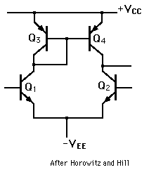

The Transistor Current Mirror
The current mirror active load is a way to accomplish high gain for a single stage differential amplifier. The NPN transistors Q1 and Q2 shown make up the differential amplifier and Q3 and Q4 (PNP) make up the current mirror. The current mirror acts as the collector load and provide a high effective collector load resistance, increasing the gain. Such a device can produce a gain of 5000 or more with no load, but drops precipitously with loading. It is used in feedback loops and as a comparator. Current mirrors are used in the 741 op-amp.
|

|